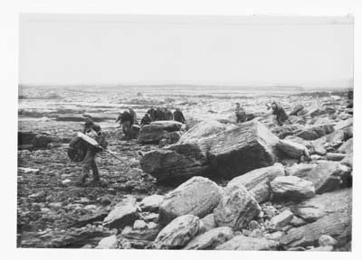
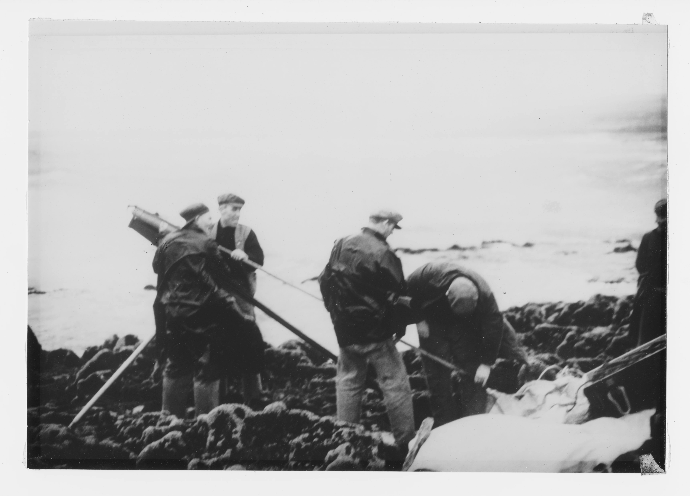
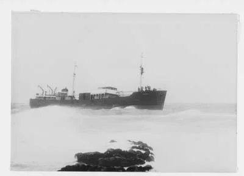
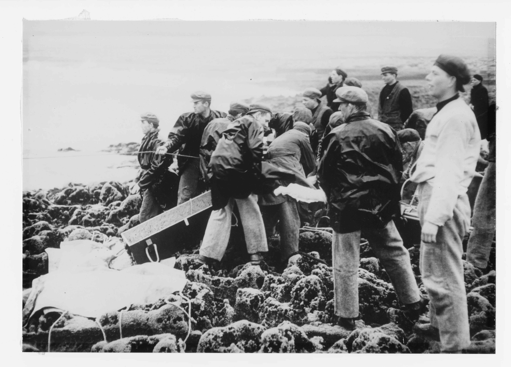
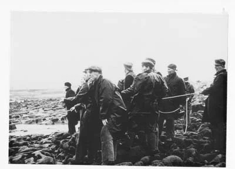
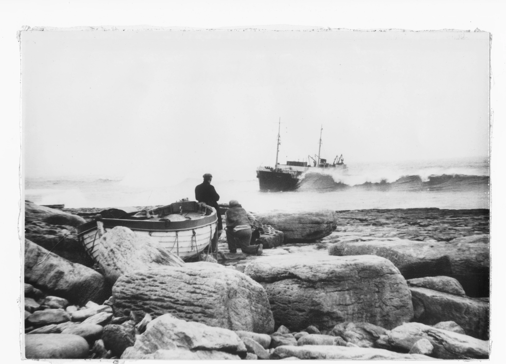

Plassey rescue
On Tuesday March 8th 1960 at 05:10 the Plassy ran aground at Finnis Rock. She was travelling from Fenit, County Kerry to Galway City while a southeasterly gale force 9 to storm force 10 was blowing. Poor visibilty and driving winds forced her off course and she ran aground on the limestone shallows at Finnis Rock (ironically pronounced 'finish' in Irish).

A crew member, Eddie Reidy recounts the fatal moment. “We were coming along the lee of the land. I was on the 4 to 8 watch and in the galley making tea and toast. Next thing, Wallop, such a thump. We hit it so hard. I was taken off the deck and hit the ceiling. Water started to rush in from underneath. There was shouting and running in all directions.”
An attempt was made to abandon ship using the starboard lifeboat but the sea was so heavy that it was deemed too dangerous and the captain ordered the crew back on board to wait to be rescued. Luckily the disaster was spotted by an islander and the onshore rescue unit were quickly contacted. However it took about an hour for the rescue unit to cover the 3 km from the rocket house to the rescue site due to the poor roads and lack of transport vehicles. The equipment had to be carried by hand over the limestone and rocks for the last kilometer.
Once the rescue unit arrived at the site the equipment had to be unloaded from its container and assembled. The team quickly set up the 'apparathus' as it was called and proceeded to launch the rocket into the wind as this would ensure better accuracy.

Two attempts failed to hit the target due to the extremely adverse conditions of driving wind, rain and swirling sand from the nearby beach. Finally the third and last remaining shot miraculously hit the rear mast. The Plassy crew secured the line to the mast to get ready for the rescue.
The onshore rescue unit secured their side of the cables, attached the 'breeches buoy', and began the slow process getting all the crew off the ship.
Getting the care off the ship safely was a hazard in its own right. Due to the weight of the crewmen being rescued, the impossibilty of keeping the cables taut in the prevailing conditions and the mountaineous waves, the men being rescued were pulled underwater as often as they were above the water.
Later it was jokingly said that they almost drowned twice. Once while being pulled ashore and later with the gallons of whiskey given to warm them up after the ordeal.

Finally the last of the plassey crew wer brought ashore and the rescue unit and ships crew made their way over the rough ground to warmth and safety. The Inisheer Rescue Team consisted of 19 men all of and all but one (due to illness) were on hand that day to assist with the rescue. In total over 65 islanders turned up to lend a hand in any way they could. The onshore rescue unit were Martin O'Donnell (Michael, Lurgan), Edward Flaherty (Patrick, Formna), Coleman Conneely (Morgan, West), Patrick Conneely (Martin, Formna), Martin Flaherty (Edward, Formna), Patrick Conneely (Patrick, West), Sean Sharry (Michael, West), Martin Conneely (John, Chapel), Patrick Griffin (Michael, West), Martin Sharry (Michael, West), Martin Folan (Patrick, Lurgan), Patrick Conneely (Coleman, Chapel), Thomas Costelloe (Martin, Chapel), Patrick Conneely (C.I.E, West), Michael O'Donnell (Patrick, West), Andrew Conneely (Martin, Lurgan), Edward Conneely (Martin, Lurgan), Michael Conneely (Peter, West), Roger Conneely (Sean, Lurgan).
The Plassey remained aground on the Finnis rock for some time until a subsequent storm washed her ashore and pushed her up to the high tide mark. Such is the power of the atlantic sea off the coast of Inisheer. Today there is a buoy on the Finnis Rock as a beacon to warn ships. It lights up with 3 quick flashes every 10 seconds. By day it is identified by its black yellow black paintwork.